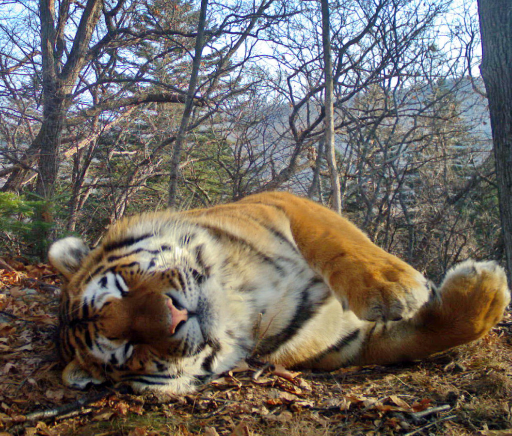
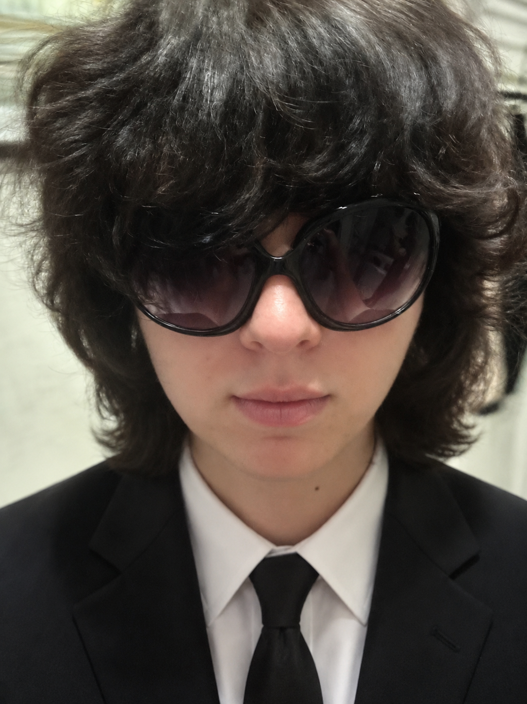

Проект посвящён сохранению редких и исчезающих видов животных, занесённых в Красную книгу. Мы рассказываем о животных, находящихся под угрозой исчезновения, привлекаем внимание к проблемам экологии и поддерживаем идеи сохранения природы.
Наши подопечные
Красная книга является одним из важнейших инструментов сохранения биологического разнообразия на нашей планете. Она содержит сведения о редких и находящихся под угрозой исчезновения видах животных, растений и грибов. Благодаря работе учёных, экологов и волонтёров удаётся отслеживать состояние популяций и принимать меры по их защите. Наш проект создан для популяризации экологических знаний и привлечения внимания общества к проблемам сохранения природы. Мы стремимся показать, насколько важна каждая форма жизни для поддержания природного баланса. Многие виды исчезают из-за деятельности человека, изменения климата, вырубки лесов и загрязнения окружающей среды. Информирование людей о существующих проблемах помогает формировать ответственное отношение к природе. На страницах сайта вы сможете познакомиться с редкими животными, узнать об их особенностях, местах обитания и существующих угрозах. Мы верим, что совместными усилиями можно сохранить уникальное природное наследие для будущих поколений.

Амурский тигр является крупнейшим представителем семейства кошачьих и одним из самых редких хищников планеты. Основная часть популяции обитает на Дальнем Востоке России. Благодаря природоохранным мерам численность вида постепенно восстанавливается, однако он всё ещё нуждается в защите. Главными угрозами остаются браконьерство, сокращение мест обитания и уменьшение кормовой базы. Амурский тигр играет важную роль в экосистеме, регулируя численность животных и поддерживая природный баланс.

Руководитель проекта
Биолог
Эколог